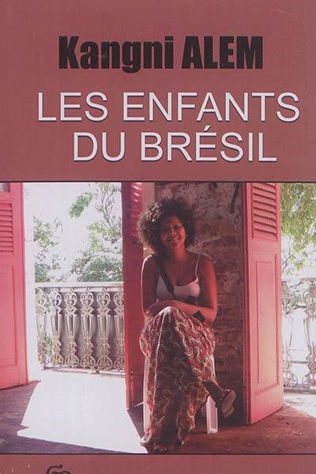

Novel : Les Enfants du Brésil
The Atlantic Ocean remains a link and natural frontier between Africa and America. In the case of the triangular trade, it is precisely a natural frontier between Africa and Brazil. In her novel Les Enfants du Brésil, Kangni Alem revisits this ebb and flow between the two lands through the prism of underwater archaeology. Inventorying, conserving, safeguarding and promoting this underwater cultural heritage linked to the wrecks of slave ships. This is the challenge faced by Candinho Santana, a UNESCO contract worker and specialist in the field, as he travels to three of Brazil's historic cities. It as if the archaeological heritage of the ocean floor is an invitation to other types of heritage intimately linked to history and memory.


Mapping of the Transatlantic Journey